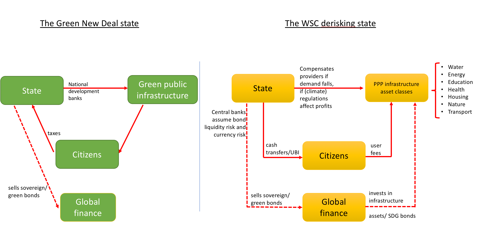
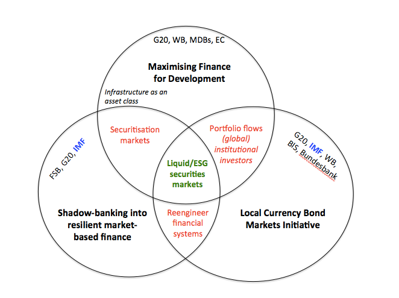

20 The Wall Street Consensus
Washington Consensus and structural adjustment is good for you, especially if it helps you avoid US bombing!
Gabor
The Wall Street Consensus is an elaborate effort to reorganize development interventions around partnerships with global finance. The UN’s Billions to Trillions agenda, the World Bank’s Maximizing Finance for Development or the G20’s Infrastructure as an Asset Class update the Washington Consensus for the age of the portfolio glut, to ‘escort’ global (North) institutional investors and the managers of their trillions into development asset classes. Making development investible requires a two‐pronged strategy: enlist the state into risk‐proofing development assets and accelerate the structural transformation of local financial systems towards market‐based finance that better accommodates portfolio investors. Ten policy commandments forge the ‘de‐risking state’. They create a safety net for investors in development assets, protecting their profits from demand risks attached to commodified infrastructure assets; from political risks attached to (progressive) policies that would threaten cash flows, including nationalization, higher minimum wages and, critically, climate regulation; and from liquidity and currency risks. These risks are transferred to the balance sheet of the state. The new ‘development as de‐risking’ paradigm narrows the scope for a green developmental state that could design a just transition to low‐carbon economies.
De-risking Wall Street
‘….we have to start by asking routinely whether private capital, rather than government funding or donor aid, can finance a project. If the conditions are not right for private investment, we need to work with our partners to de-risk projects, sectors, and entire countries’. (Jim Yong Kim, World Bank Group President (2017))
Washington Consensus
Anchored in the work of John Williamson (1990, 1993), the Washington Consensus outlined ten policy areas that would set countries on firm market foundations, under a ‘holy Trinity’ of macroeconomic stabilization through lower inflation and fiscal discipline; liberalization of trade and capital flows, of domestic product and factor markets; and privatization of state companies.
Financial globalization sets the particular context in which ‘international development’ is pursued in the 21 st century. The new development mantra, spelled out in the Billions to Trillions agenda, the World Bank’s Maximising Finance for Development, or the G20 Infrastructure as an Asset Class, aims to create investable development projects that can attract global investors and orient their trillions into financing the SDG (Social Development Goals) ambitions.
For instance, at the 2017 launch of the Maximising Finance for Development, the World Bank promised global investors $12 trillion in market opportunities that include “transportation, infrastructure, health, welfare, education’, minted into bankable/investible projects via public-private partnerships (PPPs). These are long-term contractual arrangements through which the private sector commits to finance, construct and manage public services as long as the state, with multilateral development bank support via blended finance, shares the risks to guarantee payment flows to PPP operators and investors.
This shift in the development agenda can be conceptualized as the Wall Street Consensus, an emerging Development as Derisking paradigm that reframes the (Post) Washington Consensus in the language of the Sustainable Development Goals, and identifies global finance as the actor critical to achieving the SDG.
Financialisation of development - strategies to ‘escort’ financial capital into derisked asset classes.
In the age of institutional investors and asset managers that move capital across border via portfolio flows, (subordinated) financialisation is no longer confined to the balance sheet of banks and non-financial corporations, but becomes a state-mediated project of constructing new development asset classes.
The WSC is an attempt to re-orient the institutional mechanisms of the state towards protecting the political order of financial capitalism – against climate justice movements and Green New Deal initiatives.
Development as derisking starts with the question ‘how to make projects bankable’, or how to construct investible development asset classes.
Making development ‘investible’ requires a two-pronged strategy: (a) enlist the state into derisking development asset classes, to ensure steady cash flows for investors and (b) re-engineer local financial systems in the image of US market-based finance to allow global investors’ easy entry into, and exit from, new asset classes. Thus, Wall Street Consensus marks a new moment in capitalist accumulation, from what David Harvey (2003) termed ‘accumulation by dispossession’ to accumulation by de-risking.
The state building project in the Wall Street Consensus is more ambitious than the Post- Washington Consensus tolerance of the state as corrector of market failures, through regulation and poverty alleviation (Öniş and Senses, 2005). The derisking state creates a safety net for the holders of development assets, protecting their profits from demand risks attached to infrastructure assets; from political risks attached to policies that would threaten cash flows, including nationalization, higher minimum wages and, critically, climate regulation; and from bond liquidity and currency risks. These risks are transferred to the balance sheet of the state.
The practice of de-risking goes back to the developmental state, but its politics changed. The developmental state ‘de-risked’ domestic manufacturing in priority, mainly export, sectors through industrial policies (Wade, 2018). It was successful where it had the capacity to discipline local capital (Öniş, 1991), to govern market failures through evolving institutional structures (Haggard 1990, 2018) and to generate elite support for the developmental state as a political project (Mkandawire, 2001). In its modern version, the entrepreneurial state adopts a “mission-oriented” market-shaping approach that shares the risks and returns with highly-innovative private industries (Mazzucato 2016). In contrast, the WSC state de-risks development asset classes for global institutional investors without the embedded autonomy of the developmental state (Evans, 1991). It lacks an autonomous strategic vision, unless ‘more infrastructure’ can be described as such, and has fewer tools to discipline global finance.
The WSC downplays the risks of the macro-financial order it seeks to impose. It engineers financial globalization that increases vulnerability to volatile capital flows.
In prioritizing market access, the Grand Bargain with private finance protects bondholders from participating in debt renegotiations or debt service suspension that poor and emerging countries require when under they come under the pressure of large shocks such as the COVID19 pandemic or extreme climate events. It threatens developmental policy space by narrowing the scope for a green developmental state that could design a just transition to low-carbon economies, where the burden of structural change does not disproportionately fall on the poor.
If the Washington Consensus was a coordinated campaign for the global diffusion of market-led policies, then the WSC coordinates a new modality of state governance focused on derisking.
Development is narrated as a matter of closing funding gaps through partnerships with (global) institutional investors, while development interventions are defined as policies that create risk buffers to render development projects ‘investible’.
The inclusion of institutional investors - from pension funds to insurance companies and sovereign wealth funds – and asset managers as critical stakeholders upgrades the derisking renewables strategy into a full-blown, ambitious ‘development as derisking’ paradigm. It reflects the political economy of macrofinancial reform in high-income countries after the global financial crisis.
Worried primarily by the ‘global banking glut’, that is, excessive cross-border global bank lending, high-income countries tightened global banking rules while simultaneously promoting market-based finance, a ‘resilient’ form of shadow banking dominated by institutional investors and their asset managers. The growing footprint of these ‘new powerbrokers of modern capital markets’ reflects the weakening capacity of the state to tax multinational corporations and high- net worth individuals (that pour their cash into institutional investment vehicles) and to provide traditional welfare to its citizens via public health, pensions, education (prompting them to turn to asset-based welfare via pension funds and insurance companies), often under the pressure of fiscal austerity discourses. These political forces together have created a portfolio glut. Mirroring the ‘banking glut’ of the pre- 2008 period of financial globalisation, generated by a handful of global banks, the portfolio glut is also characterised unprecedented concentration of capital in the hands of a few global asset managers such as Blackrock.
The portfolio glut is studied in the capital flow management literature through Rey’s (2015) global financial cycle, the idea that financial globalisation creates a trade-off between monetary policy autonomy and free capital flows, rendering middle-income and poor countries vulnerable to US dollar financing conditions.
It creates demands for a new ‘derisking’ mode of governance for states in the Global South.

In the derisking mode of governance, the state designs a menu of sector-specific policy and financial derisking measures to encourage PPPs, accepts that this involves the commodification of infrastructure via user-fees but puts in place cash transfers/universal basic income schemes to mitigate the potential exclusion of the poor from these services. That the derisking state does distributional politics through cash transfers paradoxically accommodates calls for rethinking welfare politics as wage labour becomes increasingly precarious. Cash transfers enable the poor to access commodified public services, and where these are not large enough, the state steps in to guarantee cash flows to investors.
Thus, development is not simply one-side defined by the political economy of capital, but more specifically, by financial capital seeking to expand to new areas, for which it colonises the infrastructure of the state. Financial capital no longer just drags the poor into the embrace of the market, but also the state.
The derisking state can thus be understood as a project that seeks to extend the infrastructural dependence of the state on finance – and thus the infrastructural power of the latter – from its two traditional domains of monetary and fiscal policy to other arenas of the government.
Derisking is not just about the transfers of risks to the state. It is also about exercising infrastructural power to prevent (regulatory) risks from materialising.
Derisking involves the central bank taking on its balance sheet bond liquidity and currency market risks.
The legal battles to code capital into development asset classes requires the state to take risks from the private sector onto its balance sheet, in a clandestine reorienting of public resources that maintains the ideological commitment to ‘fiscal responsibility’.
The WSC state assumes demand risk in user-fee based (social) infrastructure and political risk that future governments might (re-)nationalize commodified infrastructure or introduce tighter regulations, ranging from labour laws to climate regulations that would affect profitability.
Uruguay’s PPP law, passed by the Mujica government in 2011, caps the total direct and contingent liabilities generated by PPPs for the state to 7% of the previous year’s GDP, and fiscal transfers to private operators to 0.5% of previous year’s GDP.
The fiscal costs of protecting investors from demand volatility will rise rapidly as extreme climate events accelerate. Indeed, the climate crisis creates political and demand risks that institutional investors need de-risking for.
The WSC protects investors against the political risks associated with green developmental states. The green developmental state would prioritise the reorientation of finance towards low-carbon activities. This requires a public taxonomy of green/dirty assets that overcomes the shortcomings of private ESG ratings, and policies to penalize dirty assets (through capital requirements or haircuts) 21 . Yet in the Wall Street Consensus framework, such policies would classify as political risks, and require the state to compensate their holders.
In its strategy to mutate climate risks into political and demand risks, private finance may have found an important ally. Central banks conceptualize the immediate impact of tighter climate rules regulation that increase the cost of funding or dramatically change asset values as transition risks. The faster the low-carbon transition, it is argued, the higher the potential that transition risks affect financial stability, thus binding central banks in political trade-offs that privilege incremental green regulatory regimes and accommodate greenwahing, however urgent the climate crisis. Indeed, when central banks prioritize transition risks, they effectively rely on private finance to drive the climate agenda, with their coordinating role focused on subsidizing green assets, via so-called ‘green quantitative easing’.
In seeking to enlist central banks in the political coalitions against biting climate regulation, the Wall Street Consensus constrains the green developmental states directly, by making it liable for transition risks that can be framed as political and demand risks, and indirectly, by reducing the public resources and central bank support for Green New Deal programs that can effectively manage transition risks. The de- risking state and the green developmental state can hardly co-exist, particularly within market-based financial structures.
Derisking market-based finance (formerly known as shadow banking)
The turn to private finance as vehicle for sustainable development requires a change in financial structures to accommodate the portfolio glut. It makes shadow banking, understood as the production (via securitization) and financing (via wholesale funding and derivative markets) of tradable securities, the desirable structure for financial systems across the Global South. Indeed, the WSC consolidates several global initiatives to restructure bank-based financial systems into market-based finance or shadow banking, where institutional investors can easily purchase local bonds (securities), including infrastructure-backed securities, and finance as well as hedge their securities positions via repos and derivative markets. Structural policies shift from developmental states’ concern with the productive structure, to the financial system.
The Financial Stability Board announced in 2015 that its new priority would be to transform shadow banking into resilient market-based finance, which it defined as securities, derivatives and repo markets.

Figure: The turn to securities markets/market-based finance in international development
In sum, the organizational promoters of the Wall Street Consensus championed in a multiplicity of global regulatory spaces the idea that financial structure change is critical to attract the portfolio glut.
The securitization of infrastructure loans would create both highly rated, low-return tranches suitable for conservative pension funds/asset managers and lower-rated, higher return tranches suitable for risk-driven investors. It would also accelerate lending to infrastructure projects, constrained by Basel III rules for banks.
Since market-based finance is more systemically vulnerable than traditional bank-based systems, the Wall Street Consensus assigns a triple de-risking role to central banks: in bond markets and currency markets as market-makers of last resort, and, forced by the inevitable consequences of green washing, as climate rescuers of last resort, for assets left devalued by extreme climate events. Some derisking interventions, particularly in government bond markets, are at odds with the ideological premises of central bank independence. Thus, the process of implicating central banks in upholding the institutional basis of the derisking-centred accumulation regime is incremental. It builds on crises such as the COVID19 pandemic to normalize new derisking practices.
Greenwashing, like any other regulatory arbitrage, eventually confronts its architects with the systemic problems it feeds – extreme climate events will devalue carbon-intensive assets and greenwashed assets. The political logic of the Wall Street Consensus calls for central banks to rescue the holders of last resort for carbon-intensive assets (Jahnke, 2019), to risk-proof their portfolios, taking on its balance sheet the consequences of systemic greenwashing.
‘Development aid is dead, long-live private finance!’
Conclusion
The Wall Street Consensus re-imagines international development interventions as opportunities for global finance. In the new ‘development as derisking’ paradigm, institutional investors and asset managers are able to influence, if not altogether shape, the terms on which poor countries join the global supply of ‘SDG’ securities. Multilateral development banks lead the efforts to design the “de-risking”/subsidies measures that seek to protect global investors from political risk or the demand risk associated with privatized public services.
Equally important, this is a state-building project that puts in place the institutional basis for a new regime of derisking as accumulation. The state comes under pressure to institutionally codify risk-proofing arrangements, guaranteeing private financial profits in the name of aligning sustainable projects with the preferred risk/return profile of institutional investors. This includes adopting the US model of private pensions and insurance to create local institutional investors. The tendency toward concentration in the asset management sector (to exploit economies of scale and scope) may result in Global North asset managers absorbing the funds of poor countries’ institutional investors and making allocative decisions on a global level.
In pushing for financial system change, development as derisking threatens to render obsolete the old developmental banking model that put finance in the service of well- designed industrial strategies. Development banks join the efforts of constructing and derisking development asset classes. This is a political choice. Developmental banking can arguably better serve a sustainability agenda because banks can easier include, monitor and enforce safeguard policies in long-term relationships with customers. Most countries with a successful experience of industrialisation relied on public development banking as a critical pillar of industrial policies (Naqvi et al, 2018). Public development banking allowed the developmental state to derisk via long-term loans to industrial sectors identified as strategic by an industrial policy aimed at promoting the international competitiveness of local firms.
This re-engineering of financial systems in the Global South, threatens the space for alternative development strategies, and for a green developmental state. Government capacity to design autonomous policies, in many poor countries severely eroded by structural adjustment, will be further eroded by pressures to allocate scarce resources to creating the conditions for private development finance.
Daniela Gabor (2021) The Wall Street Consensus (Paywall) Draft (pdf)